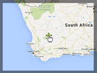

Moving the map, at the approach of a 3D marker to the map border

Example of moving the map, at the approach of a 3D marker to the map border.
Requirement: 3D Control
Usage instructions:
Add this script to map GameObject and start the scene.
Drag the marker to change the location of the map.
Add this script to map GameObject and start the scene.
Drag the marker to change the location of the map.
DragMarkerAndTranslateMapExample.cs
/* INFINITY CODE 2013-2019 */
/* http://www.infinity-code.com */
using UnityEngine;
namespace InfinityCode.OnlineMapsExamples
{
/// <summary>
/// Example of moving the map, at the approach of a 3D marker to the map border.
/// </summary>
[AddComponentMenu("Infinity Code/Online Maps/Examples (API Usage)/DragMarkerAndTranslateMapExample")]
public class DragMarkerAndTranslateMapExample : MonoBehaviour
{
/// <summary>
/// Prefab of 3D marker.
/// </summary>
public GameObject prefab;
/// <summary>
/// The minimum speed of movement map.
/// </summary>
public float minSpeed = 0;
/// <summary>
/// The maximum speed of movement map.
/// </summary>
public float maxSpeed = 1;
/// <summary>
/// Relative edge of map (0-1).
/// </summary>
public float edge = 0.1f;
private void Start()
{
// Create a new 3D marker.
OnlineMapsMarker3D marker = OnlineMapsMarker3DManager.CreateItem(OnlineMaps.instance.position,
prefab);
// Subscribe to OnDrag event.
marker.OnDrag += OnMarkerDrag;
}
private void OnMarkerDrag(OnlineMapsMarkerBase marker)
{
// Stores the coordinates of the boundaries of the map.
Vector2 tl = OnlineMaps.instance.topLeftPosition;
Vector2 br = OnlineMaps.instance.bottomRightPosition;
// Fix 180 meridian.
Vector2 dist = tl - br;
dist.x *= -1;
if (dist.x < 0) dist.x += 360;
Vector2 scale = dist * edge;
// Calculates offset of map.
Vector2 offTL = marker.position - tl;
Vector2 offBR = marker.position - br;
offTL.y *= -1;
offBR.x *= -1;
if (offTL.x < 0) offTL.x += 360;
if (offBR.x < 0) offBR.x += 360;
Vector2 mapOffset = new Vector2();
if (offTL.x < scale.x) mapOffset.x = -offTL.x * Mathf.Lerp(minSpeed, maxSpeed, 1 - offTL.x / scale.x);
if (offTL.y < scale.y) mapOffset.y = offTL.y * Mathf.Lerp(minSpeed, maxSpeed, 1 - offTL.y / scale.y);
if (offBR.x < scale.x) mapOffset.x = offBR.x * Mathf.Lerp(minSpeed, maxSpeed, 1 - offBR.x / scale.x);
if (offBR.y < scale.y) mapOffset.y = -offBR.y * Mathf.Lerp(minSpeed, maxSpeed, 1 - offBR.y / scale.y);
// If offset not equal zero, then move the map.
if (mapOffset != Vector2.zero) OnlineMaps.instance.position += mapOffset;
}
}
}